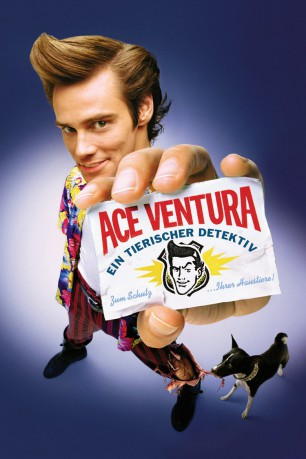

#2211 Ace Ventura - Ein tierischer Detektiv
Alternativ: Ace Ventura: Pet Detective
 
 IMDB-Wertung: 6.9 / 10
IMDB-Wertung: 6.9 / 10  Metascore: 37
Metascore: 37 
Detektiv Ace Ventura ist darauf spezialisiert, verlorengegangene Haustiere aufzuspüren. Als ihm der Fall des entführten Delphins Snowflake, dem Maskottchen der Footballmannschaft Miami Dolphins, übertragen wird, erweisen sich die animalischen Instinkte des Schnüfflers als äußerst hilfreich. Bei seinen Ermittlungen stößt Ace zwischen Liebesabenteuern und handgreiflichen Auseinandersetzungen mit den Cops schließlich auf einen ehemaligen Dolphins-Spieler, der nach einem Irrenhausaufenthalt untergetaucht ist.
Jahr: 1994
Dauer: 86 Minuten
FSK: 12
Land: USA Studio: Warner Bros.Tonspuren: DD2.0 - ,
Untertitel:
Auflösung: 1080p (1920x1080) Größe: 6717 MB
Genre: Komödie
Regisseur: Tom Shadyac
Drehbuch: Jack Bernstein, Jack Bernstein, Tom Shadyac, Jim Carrey
Soundtrack: Ira Newborn
Darsteller:
 Jim Carrey als Ace Ventura
Jim Carrey als Ace Ventura Courteney Cox als Melissa Robinson
Courteney Cox als Melissa Robinson Sean Young als Lt. Lois Einhorn
Sean Young als Lt. Lois Einhorn Tone Loc als Emilio
Tone Loc als Emilio- Dan Marino als Himself
 Noble Willingham als Riddle
Noble Willingham als Riddle Troy Evans als Roger Podacter
Troy Evans als Roger Podacter Raynor Scheine als Woodstock
Raynor Scheine als Woodstock Udo Kier als Ron Camp
Udo Kier als Ron Camp Tiny Ron als Roc
Tiny Ron als Roc David Margulies als Doctor
David Margulies als Doctor Alice Drummond als Mrs. Finkle
Alice Drummond als Mrs. Finkle- Rebecca Ferratti als Sexy Woman
 Mark Margolis als Mr. Shickadance
Mark Margolis als Mr. Shickadance Antoni Corone als Reporter #1
Antoni Corone als Reporter #1 Randall 'Tex' Cobb als Gruff Man
Randall 'Tex' Cobb als Gruff Man- Chaz Mena als Another Cop
- Robert Barrett als Thrasher Band 'Cannibal Corpses'
- Vince Cecere als Stadium Vendor , uncredited
- Robert Deacon als Redneck #1 , uncredited
 Greg Finley als Mascot , uncredited
Greg Finley als Mascot , uncredited- Michelle Russo als Fan Catching Football , uncredited
 Frank Adonis als Vinnie
Frank Adonis als Vinnie John Capodice als Sgt. Aguado
John Capodice als Sgt. Aguado- Judy Clayton als Martha Mertz
- Bill Zuckert als Mr. Finkle
- Margo Peace als Reporter #2
- Henry Landivar als Burnout
- Florence Mistrot als Neighbor
- Robert Ferrell als Carlson
- Will Knickerbocker als Manager
- Gary Munch als Director
- Terry Miller als Assistant Director
- John Archie als Reporter #3
- Cristina Karman als Reporter #4
- Tom Wahl als Reporter #5
- Herbert Goldstein als Crazy Guy
- Manuel L. García als Dolphin Trainer
- Don Shula als Miami Dolphin
- Scott Mitchell als Miami Dolphin
- Peter Stoyanovich als Himself
- Dwight Stephenson als Miami Dolphin
- Jeff Uhlenhake als Miami Dolphin
- Jeff Dellenbach als Himself
- Marco Coleman als Miami Dolphin
- Kim Bokamper als Miami Dolphin
- Jeff Cross als Miami Dolphin
 Chris Barnes als Thrasher Band 'Cannibal Corpses'
Chris Barnes als Thrasher Band 'Cannibal Corpses'- Alex Webster als Thrasher Band 'Cannibal Corpses'
- Paul Mazurkiewicz Jr. als Thrasher Band 'Cannibal Corpses'
Datei: X:\2-Dilogie(A-F)\Ace Ventura\Ace Ventura - Ein tierischer Detektiv (1994, FSK12, 1920x1080).mkv seit 21.10.2015
Festplatte: HD Collection-2(A-Z)-3(A-M)
 Alle Filme aus Gruppe '2-Dilogie(A-F)\Ace Ventura'
Alle Filme aus Gruppe '2-Dilogie(A-F)\Ace Ventura'